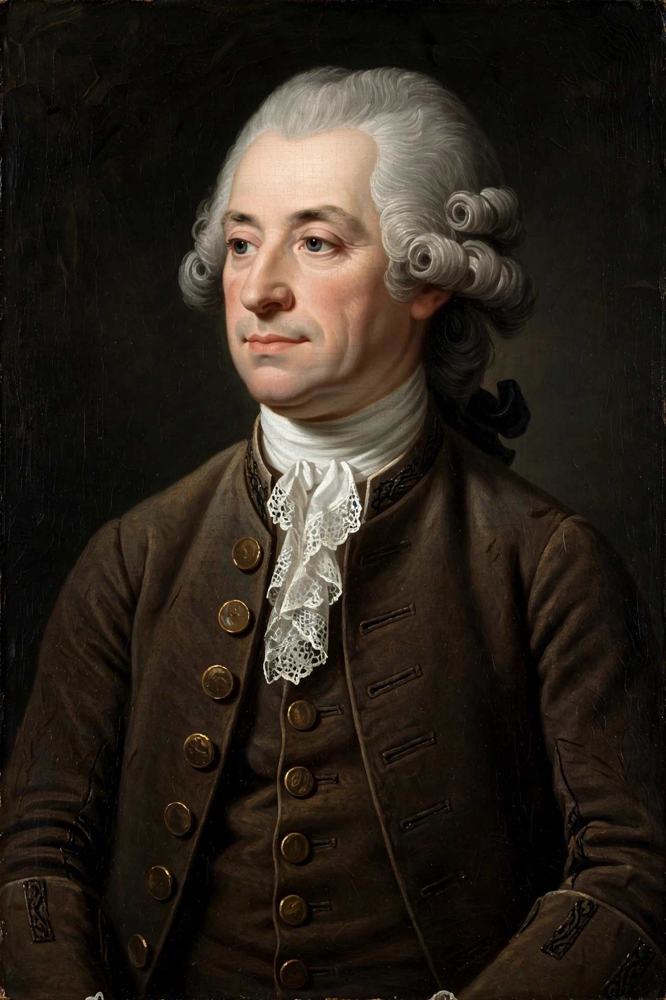

| Anders Celsius | |
|---|---|
| Born | 27 November 1701, Uppsala, Sweden |
| Died | 25 April 1744 (aged 42), Uppsala, Sweden |
| Nationality | Swedish |
| Known for | Celsius temperature scale |
| Fields | Astronomy, physics, mathematics, geology |
| Institutions | Uppsala University |

Anders Celsius (27 November 1701 – 25 April 1744) was a Swedish astronomer, physicist and mathematician. He was professor of astronomy at Uppsala University from 1730 to 1744 and is best remembered as the inventor of the 100-point thermometer scale that bears his name, the Celsius scale.
Celsius was born in Uppsala into a family of scientists: his father Nils Celsius was a professor of astronomy, and both his grandfathers were professors. A child prodigy in mathematics, he was appointed professor at Uppsala at the age of 28. Between 1732 and 1735 he travelled widely in Europe, visiting observatories in Germany, Italy and France.
In 1736 Celsius joined the French geodesic expedition to Lapland led by Pierre Louis Maupertuis, which measured the length of a degree of latitude near the pole. Its results confirmed Newton's prediction that the Earth is flattened at the poles. He founded the Uppsala Astronomical Observatory in 1741 and conducted pioneering studies of the aurora borealis, publishing a collection of 316 observations and noting the connection between auroras and disturbances of the magnetic needle.
In 1742 Celsius proposed a thermometer scale based on two fixed points: the boiling point and freezing point of water. Curiously, his original scale was inverted — 0 degrees marked boiling water and 100 degrees marked freezing. After his death the scale was reversed, a change often credited to Carl Linnaeus and the instrument maker Daniel Ekström. Celsius died of tuberculosis in 1744 and is buried in Uppsala.
This article was recreated from memory as part of a web-reconstruction exercise.